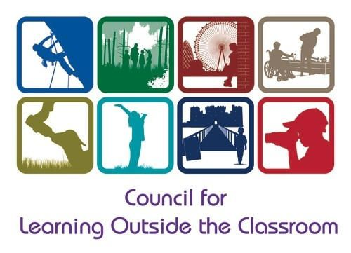

Trying to find awards that will benefit your school? This article shows five different outdoor related awards that will help transform your school for the better. Each award, in this article, will give you a summary of what their award is all about. This will give you a good understanding of whether your school is presently ready to taken on that particular award or not.
Giving children the opportunity to experience these awards, can help not just them but their local community, which will in turn help lead to the awareness of preserving the natural environment.
Tell me and I forget. Teach me and I remember. Involve me and I learn.
Benjamin Franklin (founding father of the United States)
Eco-Schools
Since 1994, ECO Schools was created in Copenhagen to give the younger generation an environmental voice. Internationally run by the Foundation for Environmental Education (FEE), they want to provide a sustainable schools programme that starts in the classroom and moves outside, giving children a great opportunity for action-based learning. This programme has three awards, which are bronze, silver, and green flag. These awards have steps that your school have to complete and maintain in order to progress to the next level. There are seven steps, which are:
- Eco Committee
- Environmental Review
- Action Plan
- Curriculum Links
- Informing and Involving
- Monitoring and Evaluate
- Eco-Code
For each award you have had to have chosen a number of topics. Examples of topics would be; litter, biodiversity, energy, water, and healthy living. For more information on this programme, please click here .
OPAL Award
Since 2006, Michael Follett (founding director of Outdoor Play and Learning - OPAL) has helped hundreds of primary schools and early years settings, see the importance play has on children’s development. This award audit has helped support primary schools by modifying and adapt their normal practices to improve the quality of their day to day playtime.
 The OPAL primary programme focuses on developing the school’s culture by going through a number of initial visits, which are:
The OPAL primary programme focuses on developing the school’s culture by going through a number of initial visits, which are:
- Introductory meeting
- Observation and audit meeting
- Developmental meetings around safety/risk management, staff best practice, and managing resources
- Awards and final plan meeting
Once the school have had their initial visits by OPAL, they will then follow the advice given over a 12-18 month period before an OPAL mentor will return for another audit. If the mentor is happy, then they will award the school either silver, gold, or platinum.
For more information about this award, click here .
LOtC Mark
The Council of Learning Outside the Classroom (CLOtC) have developed the Learning Outside the Classroom (LOtC) Mark, which is just for schools. The LOtC Mark focuses on supporting schools with their development of learning outside the classrooms throughout all subject areas.  LOtC Mark has three levels that a school can apply for, which are bronze, silver, and gold. At each level, schools are required to provide regular and dynamic experiences to all pupils.
The difference between the levels are:
Bronze: Schools are trying to implement and develop LOtC within their curriculum.
Silver: Schools have implement and developed LOtC within their curriculum.
**Gold: **Schools have shown fantastic LOtC provision, demonstrating that they are a leader in this field.
For more information about the LOtC Mark click here .
Green Tree Schools Award
The Woodland Trust set up this free award to help school teachers inspire their pupils about woodlands, trees and wildlife. The Green Tree Schools Award has four levels that a school can work towards, which are bronze, silver, gold, and platinum. This award works on a points system, and the activities given by the Woodland Trust offer different types of activities with low to high points assigned to them.
Bronze: To gain this award you have to earn 5 points (downloadable certificate)
Silver: To gain this award you have to earn 10 points (downloadable certificate)
Gold: To gain this award you have to earn 15 points (downloadable certificate, wooden plaque, two bonus platinum challenges are automatically activated once gold has been achieved)
**Platinum: **To gain this award you have to earn 30 points including 2 platinum challenges (downloadable certificate, metallic plaque upgrade)
For more in depth information about the Green Tree Schools Award click here .
RHS School Gardening Award
The Royal Horticultural Society (RHS) developed a scheme that came out of the ‘Every Child Matters’ programme, devised by the government, in 2007, to change and improve child care. This reward scheme is made up of five different levels, which a school can do. There are levels 1 to 5, and once each level is completed, the schools will receive a reward.
In achieving each level, you must:
- Level 1 - Write about your future gardening project
- Level 2 - Write about your gardening activities
- Level 3 - Write about a small project or activity
- Level 4 - Write about using your own produce within your garden, a cross curricular project or a garden enterprise idea
- Level 5 - Write about your gardening project or event that has involved the local community
For more in depth information about the RHS School Gardening Award click here .
Quality Over Quantity
There are two types of schools, the quality schools and the quantity schools. The ‘quality schools’ embrace awards and try to embed them into their curriculum or day to day routines.
‘Quantity schools’ look at achieving each award quickly to show the outside world how successful their school is. In doing this they don’t have the support from everyone else within the school to keep that award going and therefore will be lost.
Schools should consider the pupils experiences and what skills they will develop from that particular award. They also need to plan for how to implement it within their day to day school life, so that it becomes part of the fabric of the school. Showing that level of commitment will mean that the awards will change the school and their children for the better.